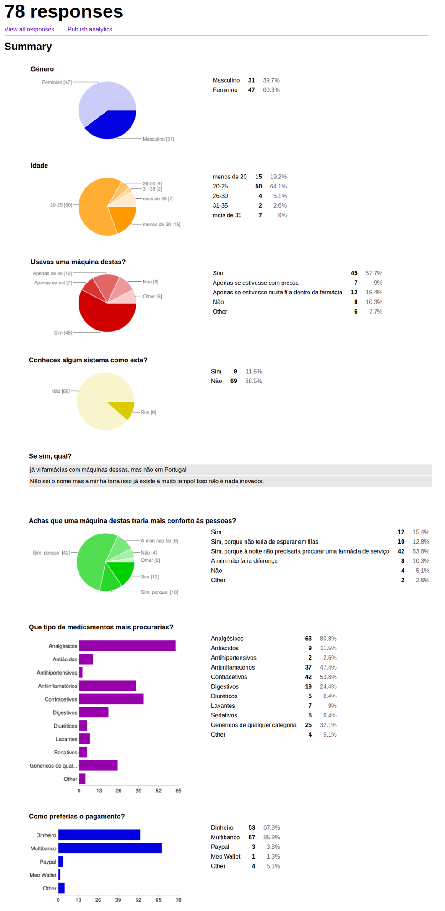

Visão do projeto (v3)
Sumário executivo
Inserido no plano curricular da disciplina de Modelação e Análise de Sistemas, do curso de Engenharia Informática, da Universidade de Aveiro, este relatório provém da execução do trabalho prático P3 referente ao (mini) projeto de criação de especificações para um sistema de informação.
Considerando o tempo de espera em filas nas farmácias e a necessidade de fazer deslocações à noite para encontrar uma farmácia de serviço, decidimos projetar um sistema de informação que possibilitasse a compra de medicamentos não sujeitos a receita médica através de um quiosque localizado à porta das farmácias.
Assim, neste relatório serão abordadas as preocupações encontradas (por nós e por especialistas), decisões tomadas de acordo com os desafios encontrados e uma solução de negócio para este sistema e para a sua gestão.
Contexto do negócio
Cliente
Este projeto não pretende apenas poupar tempo e deslocações aos utentes das farmácias, mas também agilizar os recursos dos farmacêuticos.
As farmácias recebem todos os dias dezenas, ou até centenas, de pessoas que pretendem adquirir medicamentos com ou sem receita médica. Apesar de o aconselhamento destes profissionais ser bastante importante ao adquirir estes produtos, há medicamentos que são banais para as pessoas\footnote{ou seja, que as pessoas já estão tão habituadas a comprar e sabem exatamente para o que servem e como utilizar}. Portanto, o tempo dispendido, nestes casos, a atender os utentes, poderia ser mais bem aproveitado a prestar ajuda a pessoas que necessitam de aconselhamento em relação a determinado medicamento ou situação, ou até a fazer inventários e outras tarefas de "bastidor".
Situação atual
Uma pessoa dirige-se a uma farmácia para comprar um medicamento não sujeito a receita médica e deparar-se com uma fila. A pessoa ou escolhe esperar e talvez chegar atrasada a um compromisso ou desiste e tenta passar na/noutra farmácia mais tarde.
Também pode acontecer uma pessoa precisar comprar um medicamento, por exemplo, para as dores de cabeça, mas todas as farmácias já se encontram fechadas. Talvez haja uma farmácia perto da casa desta pessoa, no entanto a farmácia de serviço está a 10km e, para adquirir o medicamento que necessita, terá de se deslocar essa distância, se tiver os meios para tal.
\Mas os problemas não surgem apenas aos utentes de uma farmácia. O farmacêutico pode estar com alguma dificuldade em atender todos os utentes que se dirigiram naquele dia à sua farmácia, e a maioria sabe exatamente o que pretende comprar. Ainda, o farmacêutico talvez tenha que preencher um inventário ou encomendar medicamentos em falta, porém não pode deixar de atender os utentes.
Como agilizar todo este processo?
Novas oportunidades
O sistema que pretendemos projetar servirá para que os utentes da farmácia possam dirigir-se ao quiosque colocado à porta da farmácia para adquirir medicamentos não sujeitos a receita médica comuns.
Desta forma, os farmacêuticos poderão dedicar mais tempo e atenção a situações que requeiram determinantemente a sua presença, bem como as necessidades dos utentes serão satisfeitas de forma mais fácil e rápida.
Apresentação do produto pretendido
Objetivos e âmbito do produto
De acordo com a Constituição da República Portuguesa aprovada em 1976, qualquer cidadão tem direito à protecção da saúde e o dever de a defender e promover, independentemente da sua condição económica. Uma das alíneas referente ao direito à saúde (art.º 64) refere precisamente que, para assegurar o direito à protecção da saúde, o Estado está incumbido, em parte, de comercializar e usar produtos químicos, biológicos e farmacêuticos e outros meios de tratamento e diagnóstico.
Um estabelecimento que defende e promove o direito à saúde é a Farmácia, na qual se preparam ou vendem medicamentos e outros materiais necessários para cuidar da saúde. No entanto, o tempo gasto pelas pessoas para comprarem medicamentos e a forma como se processa a venda pode ser agilizados, recorrendo à tecnologia.
Assim, pretendemos que o máximo de farmácias contenha um quiosque de venda automática de medicamentos não sujeitos a receita médica. O quiosque deverá estar embutido na parede da própria farmácia e terá uma interface que orientará o utente e lhe dará as informações necessárias para encontrar o medicamento que necessita.
O quiosque só conterá medicamentos de uso comum e com dosagens baixas. Também não serão vendidos medicamentos que possam apresentar um risco para a saúde do utente, como a pílula do dia seguinte, pois nestes casos o acompanhamento e aconselhamento por parte de um profissional (um farmacêutico) é imprescindível.
Para além disto, haverá uma central que regulará todos os quiosques a nível de stock de medicamentos, manutenção, entre outros que se venham a mostrar necessários [para tal, a central terá uma base de dados]. Cada quiosque deve enviar um relatório com o ponto da situação (com estatísticas dos medicamentos mais procurados, com possíveis avisos de stock e manutenção, podendo conter mais informações relevantes) quinzenalmente. O aviso de que o stock de um medicamento está prestes a acabar deve ser enviado quando a quantidade desse medicamento no quiosque chegar a cinco. Este aviso é enviado para a central de controlo e esta notifica a farmácia correspondente que deve repôr o medicamento em causa.
Resumo das capacidades pretendidas
| Benefícios-chave | Suporte incluído no sistema |
|---|---|
| Redução de filas nas farmácias e de deslocações desnecessárias a uma farmácia de serviço à noite | Utentes dirigem-se ao quiosque para comprar medicamentos não sujeitos a receita médica |
| Aumento da produtividade dos farmacêuticos | Ao passo que menos utentes precisam se dirigir ao interior da farmácia, o farmacêutico pode dedicar mais tempo a,preencher um inventário ou encomendar medicamentos em falta |
| Aumento de segurança à noite | Farmácia não precisa estar aberta à noite, pois o quiosque vende os medicamentos não sujeitos a receita médica mais comuns |
| Gestão automática de quiosques | Central (plataforma) de contolo regula todos os quiosques e notifica as farmácias quando necessário |
Ambiente de utilização
Qualquer pessoa que pretenda comprar um medicamento não sujeito a receita médica, pode dirigir-se a uma PharmaMachine, o quiosque de venda automática destes medicamentos que se encontrará à porta da farmácia. O sistema terá uma interface simples de utilizar a fim de ser acessível a qualquer pessoa. O idioma utilizado será o português.
O utente da farmácia que necessitar de um medicamento não sujeito a receita médica pode dirigir-se a qualquer momento do dia à PharmaMachine, visto que todos os quiosques funcionarão 24h/dia. A interação será de um para um, pois um quiosque é utilizado por uma pessoa de cada vez. No entanto, todos os quiosques são geridos simultaneamente pela mesma plataforma, a central de controlo.
Os quiosques estarão sujeitos a sujidade da rua, pelo que devem ser feitos com materiais resistentes e com cores que não se note demasiado a sujidade. Sendo possíveis alvos de vandalismo, devem ser também embutidos na parede, como os multibancos, para tentar minimizar os danos.
Pressupostos e dependências
A interação entre o utente e o quiosque é feita através de um ecrã tátil. O ecrã deve estar devidamente protegido, pois a sua inutilização devido a mau uso e/ou desgaste provocaria também a inutilização do próprio quiosque.
A rutura de stock de um medicamento pode comprometer a utilização pretendida. Assim, cada quiosque envia um aviso de que o stock de um medicamento está prestes a acabar quando a quantidade desse medicamento no quiosque chegar a cinco. Este aviso é enviado para a central de controlo e esta notifica a farmácia correspondente que deve repôr o medicamento em causa.
Fontes e material de referência
Consideramos que o produto apresentado tem potencial. Porém, com o intuito de determinar possíveis problemas e desafios, decidimos fazer um pequeno estudo de mercado através de um inquérito que divulgámos nas redes sociais e ainda decidimos fazer algumas entrevistas a farmacêuticos.
As perguntas e os resultados do inquérito e das entrevistas seguem em anexo. Em seguida, são apresentadas as conclusões que retiramos destas fontes de referência.
Conclusões retiradas
No inquérito obtivemos 78 respostas, sendo que a camada predominante foi a camada jovem (idades inferiores a 25 anos), representando 83.3% das respostas (isto pode dever-se ao facto de o inquérito ter sido divulgado nas redes sociais).
Pensamos que muitas pessoas iriam aderir a esta forma de adquirir medicamentos não sujeitos a receita médica, pois os que disseram que usariam de facto o quiosque e os que apenas utilizariam em certas situações representam cerca de 82.1% das 78 respostas.
O facto de a grande maioria das pesssoas que responderam ao inquérito (88.5%) não conhecer nenhum sistema como este e, sendo que 82% acham que estes quiosques trariam mais conforto às pessoas (especialmente por não ter de procurar uma farmácia de serviço à noite), achamos que este sistema seria inovar e útil para as pessoas. No entanto, como se poderá notar em algumas respostas dos farmacêuticos, apesar de útil, os quiosques poderiam ser usados de forma não moderada.
Reparámos que os medicamentos com mais procura seriam os analgésicos (80.8\%), contracetivos (53.8%), antiinflamatórios (47.4%) e os genéricos de qualquer categoria (32.1%). Os métodos de pagamento preferidos seriam o multibanco (85.9%) e dinheiro (67.9%).
Pensamos que as farmácias comprariam um quiosque, porém não aceitariam que todos os medicamentos (mesmo sendo não sujeitos a receita médica) fossem nele vendidos.
De forma geral, os farmacêuticos concordam com a nossa visão de que as pessoas adeririam a esta forma de comprar estes medicamentos, no entanto expressaram a sua preocupação quanto à falta de acompanhamento e informação por parte de um profissional habilitado.
Percebemos que, muito provavelmente, estes quiosques seriam alvos de vandalismo e/ou de tentativas de roubo, pelo que achamos que, ao serem instalados nas farmácias, deviam ser embutidos na parede da farmácia (à semelhança dos multibancos).
Face às procupações encontradas, reformulamos algumas características no nosso projeto e este relatório corresponde já numa visão do projeto mais ponderada.
Anexos

(Figura 1: Estudo de mercado - Inquérito)
(Figura 2: Entrevistas aos farmacêuticos)